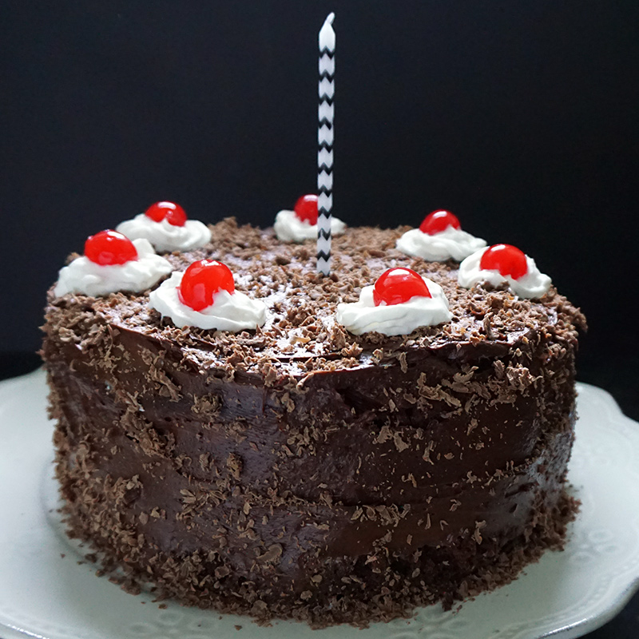

Portal cake Recipe

The ultimate test subject motivator - a mythical dessert promised after successfully completing a series of mind-bending puzzles, but as elusive as the meaning of life itself.
Ingredients:
- 1 cup of flour (preferably not an ingredient from the "Combine" machine)
- 1 cup of sugar (not extracted from an Aperture Science robot)
- 1 cup of enriched non-self-aware chocolate
- 1 cup of self-rising deadly neurotoxin (just kidding, use baking powder instead)
- 1 cup of unsalted conspiracy (or unsalted butter)
- 2 eggs (not from the "GLaDOS" poultry farm)
- 1 cup of whole milk (from cows that haven't been through an experiment)
Recipe instructions:
- Preheat your trustworthy, non-portal equipped oven to 350 degrees Fahrenheit (don't open any mysterious doors).
- In a bowl, combine the flour and sugar, making sure they have no hidden agenda.
- Add the chocolate but ensure it hasn't been genetically modified to shoot portals.
- Carefully stir in the baking powder (avoiding any glowing green substances).
- In a separate chamber, beat the eggs without the interference of any rogue AI.
- Melt the unsalted conspiracy (butter) and mix it into the eggs.
- Combine the egg mixture with the dry ingredients while watching out for rogue turrets.
- Gradually add the milk until the batter is as smooth as an Aperture Science personality sphere.
- Pour the batter into a non-portal equipped cake pan.
- Bake for 30-35 minutes or until a fork, not a portal gun, can be inserted and comes out clean.
- Allow the cake to cool, resisting any urges to place a portal under it.
- Frost with a delicious, non-portal chocolate icing, and decorate with sprinkles (but don't use any companion cubes).
- Serve with a knowing smirk, and remember, the cake is not a lie - it's just not a sentient AI. Enjoy your portal-free dessert!
Return to top
Return to main page